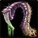
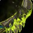
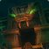

小怪 · 第 8 波
看到剧毒涌动读条
→ 牺牲祝福+
牺牲祝福+ 圣盾术
圣盾术
牺牲给血最薄的输出，紧接着开圣盾。转过来的伤害被圣盾吃掉，自己也免疫涌动和毒液爆裂。
这个副本伤害大多是自然伤害和持续毒，奶骑除了刷血，还要把几个祝福交对人：牺牲祝福给切骨者点名的人，保护祝福给被初生饥饿追的人，自由祝福和清洁术处理麻痹射击和毒伤。第 8 波剧毒涌动用牺牲祝福接圣盾术。
一整场 +24 里，圣盾术、牺牲祝福、保护祝福、光环掌握分别交给了哪个机制。
每把都要做到的四件事。
牺牲给血最薄的输出，紧接着开圣盾。转过来的伤害被圣盾吃掉，自己也免疫涌动和毒液爆裂。
交给被飞斧点名的人，盖住首击和 7 秒流血。切骨者是物理伤害，保护祝福可以直接免疫。
给被追的人。振响是物理伤害，保护祝福期间整段振响和追击都不掉血。
预先给近战，减速上不了身。已经中了就用清洁术驱散（魔法）。
第 8 波的毒术士读剧毒涌动：9 秒全团毒风暴，还有淬毒之刃和活体毒液死亡时的毒液爆裂，常常还叠着鲜血献祭。这是全场最疼的一段。
天赋「圣光决断」让你在自律期间也能开圣盾，前面交过圣疗术或保护祝福也不影响。
每一行：看到什么 → 按什么（交给谁）→ 为什么。



粉框是这个副本的核心技能。
落在队友或自己身上时，奶骑手里有什么。
| 减益 | 类型 | 奶骑能处理吗 | 怎么处理 |
|---|---|---|---|
麻痹射击 | 魔法减速 | ✓ 清洁术 | 读条时自由祝福防减速，上身后驱散 |
| 中毒 | ✓ 清洁术 | 需要强化清洁术；萨满清毒也能解 | |
| 物理吸收治疗 | ✓ 保护祝福 / 圣疗术 | 保护祝福去掉；圣疗术直接打穿吸收盾 | |
| 点名流血 | ✓ 保护祝福 | 读条时牺牲或保护给被点名的人 | |
| 点名不可驱散 | ✗ 只能分担 | 牺牲祝福给中球的人；自己中了用圣盾清 | |
| 全团叠层 | ✗ 只能减伤 | 光环掌握；自己层数高用圣盾清 | |
淬毒之刃 | 自然4 秒 | ✗ | 持续很短，刷血；队友危险时圣疗术 |
毒牙仪式 | 拦截 | ✗ 只能减伤 | 光环掌握；自己拦时开圣盾 |
+24 高手同款神圣天赋，英雄天赋光铸者。复制字符串，在游戏天赋界面点「导入」。
CEEAAAAAAAAAAAAAAAAAAAAAAAAAALAwMAAwyAmZWmZmlZMjhFzmZWMTTMLzYmZGjZLDADAbgN2MzAAAAzMLLLWmZYjtxDMYDYGDAwMDAzYMaA